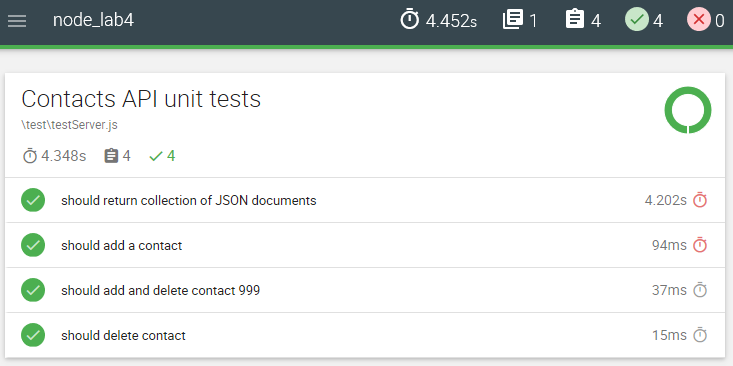

API Testing Lab
This lab shows you how to test a Node API using Mocha, Should, Sinon, and SuperTest.
Prerequisites
You need a working version of the Hacker News and Contacts API for this lab. The solution to the last lab you completed will suffice. Otherwise, you can get the solution from the GitHub examples repo.
Hacker Refactor
You will now refactor the Hacker and Contact API with some improvements. This will then give us a reason to construct some tests
Seeding
We will consolodate the seeding data into the one module/location and use the db.js module to seed the db. This way we can simplify the main index.js file of the app.
In the root folder of the Express application, create a new folder called seed.
In the seed folder, create a new file called hackerData.js with the following content.
import userModel from '../api/users/userModel';
import postModel from '../api/posts/postsModel';
const posts = [
{id: 1,
title: 'India - Tiger population sees 30% increase.',
link: 'http://www.bbc.com/news/world-asia-30896028',
user: '',
comments: [],
upvotes: 10,
},
{
id: 2,
title: 'The button that is not.',
link: 'http://blog.nuclearsecrecy.com/2014/12/15/button-isnt/',
user: '',
comments: [],
upvotes: 12,
},
{
id: 3,
title: 'Google Nears $1B Investment in SpaceX',
link: null,
user: '',
comments: [],
upvotes: 12,
},
{
id: 4,
title: 'Coinbase Raises $75M from DFJ Growth, USAA, and More',
link: 'http://blog.coinbase.com/post/108642362357/coinbase-raises-75m-from-dfj-growth-usaa-nyse',
user: '',
comments: [],
upvotes: 2,
},
];
const users = [{
'username': 'user1',
'password': 'test1',
},
{
'username': 'user2',
'password': 'test2',
},
];
export default async function loadHackerData() {
try {
await userModel.deleteMany();
//Save user data to db
const user1 = await new userModel(users[0]).save();
const user2 = await new userModel(users[1]).save();
//assign users randomly to each post
posts.forEach((post)=>{post.user = ((Math.random<0.5)?user1._id : user2._id)});
//Load posts data
await postModel.deleteMany();
await postModel.collection.insertMany(posts);
console.info(`${posts.length} posts were successfully stored.`);
console.info(`${users.length} users were successfully stored.`);
} catch (err) {
console.error(`failed to Load user Data: ${err}`);
}
}Move the contactsData.js into the new seed folder
Create a new file called
index.jsin the seed folder with the following content:
import loadContacts from './contactsData';
import loadHackerData from './hackerData';
export default () => {
loadContacts();
loadHackerData();
};Remove old seeding references
Delete postsData.js and userData.js from the root folder.
Locate and delete the following from the code in
index.jsin the root folder of the Express app.
if (process.env.seedDb) {
loadContacts();
loadPosts();
loadUsers();
}- Remove all unused imports for userData, contactsData, postData in the import stataements of the index.js.
Update db.js
Finally, update the db.js file as follows to import the seed module and call it once the DB is loaded.
import seed from './seed';
...
db.once('open', () => {
console.log(`database connected to ${db.name} on ${db.host}`);
seed();
});Update Posts API
- Open /api/posts/index.js and update the GET /:id route to populate the user path:
// get post
router.get('/:id', asyncHandler(async (req, res) => {
const id = req.params.id;
const post = await Post.findById(id).populate('user');
return res.send({post});
}));We can now create some unit and integration tests for the API.
Set up
Install dependencies
All the following are development dependencies because you will just use them for testing. As such, use the --save-dev option for npm installation.
- You need Mocha, Should and SuperTest. Install as development dependencies into your new lab folder as follows.
npm install --save-dev mocha
npm install --save-dev should
npm install --save-dev sinon sinon-test
npm install --save-dev supertest- You need babel-core and babel-polyfill. As we are writing code using ES6, we need to be able to transpile our unit tests using Babel. We can use the existing Babel configuration for the lab but we need to add babel-core and babel-polyfill. Install both as a dev dependency.
npm install --save-dev babel-core
npm install --save-dev babel-polyfill- You need Cross-Env.
NODE_ENVis an environment variable.NODE_ENVvalue is set to ‘test’ when we run our tests. We will also need to revert to 'development' when we're updating the code. Setting environment variables differs across Operating Systems/platforms. We also want to be able to set the value from a script. Cross-Env is an NPM package which uses a single command to set environment variables without worrying about the platform. Install Cross-Env as a development dependency:
npm install save-dev cross-envMockgoose
Mockgoose will allow us to test the code in isolation from MongoDB.
- Install Mockgoose as a development dependency:
npm install --save-dev mockgooseUnit testing the Mongoose Models
Ideally, for unit testing, you would like to test without having to connect to a database. Unit-testing is where we test one single unit at a time in isolation from other functionalities. A DB connection would make the tests slow, difficult to set up, and really would become a form of integration testing because we would be testing database integration code as part of the test.
To unit test our models for Hacker News (postModel, commentModel, and userModel) we will use Mocha.js test framework. We will use should.js as the assertion mechanism to write the tests and finally signon.js to spy on and check correct function calls
postsModel
Create a folder called test in /api/posts/
Create a new eslint confic file calles .eslintrc file in /api/posts/tests with the following content:
{
"env": {
"mocha": true
},
"rules": {
"no-unused-vars":"off"
}
}This lets eslint know that this folder is a mocha environment and it won't pick up on unused variables and undeclared functions.
- In /api/posts/tests create a file called testPostsSchema.js and add the following code:
import should from 'should';
import postsModel from '../postsModel';
import mongoose from 'mongoose';
const Schema = mongoose.Schema;
describe('postModelTests', () => {
let post = {};
//create a post with random user id before each test
beforeEach(() => {
const id = mongoose.Types.ObjectId().toString(); //generates pseudo random ObjectID
post = {
user: id,
title: "A title"
};
})
it('should validate a post with a user and title', (done) => {
const m = new postsModel(post);
m.validate((err) => {
should.not.exist(err);
m.title.should.equal(post.title);
m.user.toString().should.equal(post.user);
done();
});
});- In the root folder of the Express app, open package.json and, in the
scriptsproperty, add a new entry to run the mocha using the tests defined in the /api/ folders:
...
"scripts": {
"start": "nodemon --ignore hackerNews/* --exec babel-node index.js",
"unit-test": "cross-env NODE_ENV=test mocha './api/**/tests/*.js --require babel-core/register --require babel-polyfill --exit"
...
}
...Open a command line at the root of the Express node app and run the test by entering
npm run unit-test. You should see output similar to the following:
More tests...
- Now add the following to check post and comments validation
it('should validate a post with a user and title', (done) => {
const m = new postsModel(post);
m.validate((err) => {
should.not.exist(err);
m.title.should.equal(post.title);
m.user.toString().should.equal(post.user);
done();
});
});
it('should require a user and title', (done) => {
const badPost = {
message: "This is not valid"
};
const m = new postsModel(badPost);
m.validate((err) => {
const errors = err.errors;
errors.should.have.property("user");
errors.should.have.property("title");
done();
});
});
it('should add a comment to a post', function (done) {
const m = new postsModel(post);
m.comments.push({
body: "a comment body",
user: "5ca22a64816cd8423c27214c"
});
m.validate((err) => {
should.not.exist(err);
m.comments[0].body.should.equal("a comment body");
m.comments[0].user.toString().should.equal("5ca22a64816cd8423c27214c");
done();
});
});
it('should require a user and body for a comment to a post', function (done) {
const m = new postsModel(post);
m.comments.push({
acomment: "this is not a valid comment"
});
m.validate((err) => {
should.exist(err);
const errors = err.errors;
errors.should.have.property("comments.0.user");
errors.should.have.property("comments.0.body");
done();
});
});Run the test script again, you should now see a few more test results:

Unit Testing - User Model
Our Mongoose models include instance and static methods. We would like to write some tests for them however, some instance methods access the database and, ideally, we'd like to remove db dependencies in our unit tests. This is a bit more challenging but we can use sinon.js to check that we are calling the db correctly.
- As before, create a tests folder in /api/users and create a file called .eslintrc that contains the following:
{
"env": {
"mocha": true
},
"rules": {
"no-unused-vars":"off"
}
}- In /api/users/tests, create file called testUserSchema.js and add the following simple tests:
import should from 'should';
import userModel from '../userModel';
describe('userModelTests', () => {
const testUser = {};
before(()=>{
const username="fxwalsh";
const password="pass";
testUser.username = username;
testUser.password = password;
});
it('should validate a user with a username and password', (done) => {
const m = new userModel(testUser);
m.validate((err) => {
should.not.exist(err);
m.username.should.equal(testUser.username);
m.password.should.equal(testUser.password);
done();
});
});
it('should require a username and password', (done) => {
const user={auser: "This is not valid"};
const m = new userModel(user);
m.validate((err) => {
should.exist(err);
const errors = err.errors;
errors.should.have.property("username");
errors.should.have.property("password");
done();
});
});- Run the tests as before and make sure they pass(the other Posts Model tests will run also)...

Testing User Schema Static Methods - findByUserName
- Add the following to the import section of testUserModel
import sinon from 'sinon';
import sinonTestFactory from 'sinon-test';- Now, in the same file, add the following test:
it('should search using username', sinonTest(function () {
this.stub(userModel, 'findOne');
userModel.findByUserName(testUser.username);
sinon.assert.calledWith(userModel.findOne, {
username: testUser.username
});
}));We start by stubbing userModel.findOne. We "stub it out" so it doesn’t do any database access. Stubbing it also allows us to use Sinon.js to check whether it was called with the correct parameters.
We then call userModel.findByUserName(username) and use sinon.assert.calledWith... to check the stubbed findOne was called correctly.
Testing Use Schema instance Methods - comparePasswords
As this method does not directly "go at" the database, it can be checked without stubbing.
- Insert the following test into the same file as above, testUserSchema.js.
it('should detect matching passwords', sinonTest(function (done) {
const username = "fxwalsh";
const password = "$2a$10$hxklBTD1KLdYOCrulbtf8OKxjxFEc5WBCODCCCYGb67udslRc0mHi";
const user1 = {
username: username,
password: password
};
const user2 = {
username: username,
password: password
};
const m1 = new userModel(user1);
const m2 = new userModel(user2);
m1.comparePassword(m2.password, (err, result) => {
should.not.exist(err);
result.should.be.true;
done();
}
)
}));The above test creates 2 users with the same password. The comparePassword method is called and resulting callback validated the correct response(no err object and result==true).
Testing the Contacts API
Create your first integration test
- To enable us to test the app, we need to export the app object from index.js in the base folder of the project. Modify the index.js as follows:
...
export const app = express(); //replaces the previous const app = express();
...Create new folder called test in the root folder of the lab.
As before, create a new eslint config file called .eslintrc file in tests with the following content:
{
"env": {
"mocha": true
},
"rules": {
"no-unused-vars":"off"
}
}+Create a new file called /test/testContactsApi.js with the following content.
import supertest from 'supertest';
import {app} from '../index.js';
import should from 'should';
// UNIT test begin
describe('Contacts API test', function () {
this.timeout(120000);
// test #1: return a collection of json documents
it('should return collection of JSON documents', function (done) {
supertest(app)
.get('/api/contacts')
.expect('Content-type', /json/)
.expect(200) // This is the HTTP response
.then(res => {
// HTTP status should be 200
res.should.have.property('status').equal(200);
done();
});
});
});Update package.json
- Replace the scripts entry in the package.json file with the following. ```json
"scripts": { .... , "test": "cross-env NODE_ENV=test mocha --require babel-core/register --require babel-polyfill --exit", "pretest": "eslint .js ./api/contacts/.js ./test/*.js" }
The above script entry for test will set ``NODE_ENV`` to test and then run mocha against the files matching the pattern provided (i.e. by default it'll pick up the test in the test folder). You also need to update the start script to set ``NODE_ENV`` to 'development' before starting the server.
> **The pretest script is optional**. If you are linting, it might be a good idea to include a "full lint" before each test. When you run the test script, the pretest will be run automatically.
Also, to ignore any linting errors relating to undeclared mocha functions like describe, create a new file called *.eslintrc* in the test folder and add the following content:
~~~json
{
"env": {
"mocha": true
},
"rules": {
"no-unused-vars":"off"
}
}
~~~
+ Now test by running the test script:
```bash
npm run testThe first time you run it you will probably get a few errors and warnings similar to what's shown in the following diagram:

Fix the errors/warnings listed and you should see something similar to the following:
Include Mockgoose
The current test is an integration test as it requires a real, functioning database. If we want our tests to just apply to the service interface then we should remove the dependency on the database.
In our current solution, we connect to the database by importing the db.js module. Update the db.js module to use Mockgoose for testing as follows:
- In db.js, Import the Mockgoose package
import {Mockgoose} from 'mockgoose';
...In db.js, replace the
mongoose.connect(process.env.mongoDB);statement with the following code:... // Connect to database if (process.env.NODE_ENV === 'test') { // use mockgoose for testing const mockgoose=new Mockgoose(mongoose); mockgoose.prepareStorage().then(()=>{ mongoose.connect(process.env.mongoDB); }); } else { // use the real deal for everything else mongoose.connect(process.env.mongoDB); } ...
This code will wrap the existing Mongoose object with Mockgoose only if the NODE_ENV environment variable is set to test (i.e. we're running test cases).
- Now test again by running the test script:
npm run testThis time the first test run will take longer as Mockgoose will create a local Mongodb in memory for the test. Subsequent tests will be faster though.
More api tests
Now lets try to test the add contact function of the API.
Add a contact
- Add another unit test to the last test. This time we'll use SuperTest to post a new contact and test for the correct status:
// test #2 add a contact it('should add a contact', function (done) { // post to /api/contacts supertest(app) .post('/api/contacts') .send({ name: 'Contact 99', address: '123 Strand St', age:23 }) .expect('Content-type', /json/) .expect(201) .then ((res) => { res.status.should.equal(201); res.body.should.have.property('_id'); res.body.name.should.equal('Contact 99'); done(); }); });
Now run the test again npm run test. You should see something similar to the following:

Delete a Contact
For this test, you will delete the first contact in the list returned from the API:
- Enter the following code:
// #3 delete a contact
it('should delete a contact', () => {
return supertest(app)
.get('/api/contacts')
.expect('Content-type', /json/)
.expect(200).then( (res) => {
const id=res.body[0]._id;
return supertest(app).delete(`/api/contacts/${id}`).expect(204);
}).then( (res) => {
res.status.should.equal(204);
});
});Challenge
Develop a test for the following route in the Contacts API
PUT /api/contacts/[:id]
Use the notes and online resources for support.
Report Generation
At the moment, the tests report back to the console. You'll now use Mochawesome to generate a unit test report that visualises the test results.
Install Mochawesome to you dev dependencies.
npm install --save-dev mochawesomeTo output the results, update your test script in package.json to include mochawsome as the reporter:
"test": "cross-env NODE_ENV=test mocha --require babel-core/register --require babel-polyfill --reporter mochawesome"Now run the tests again. Mochawesome will generate reports in the /mochawesome-reports/ folder in your project 